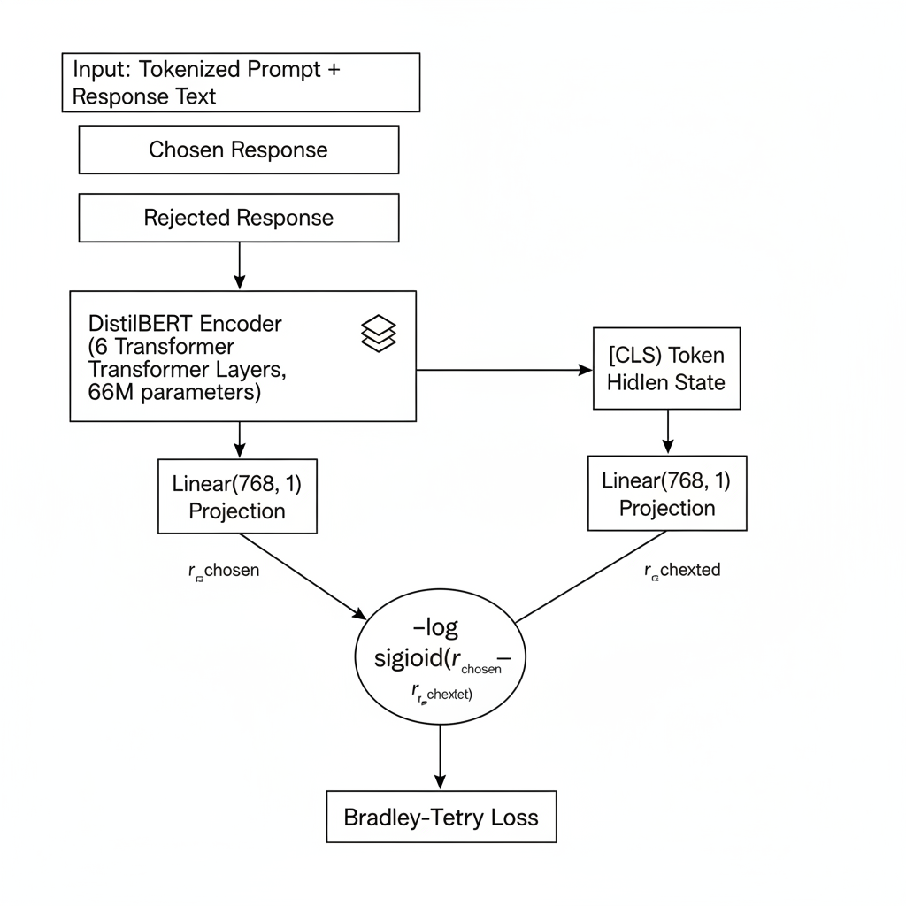
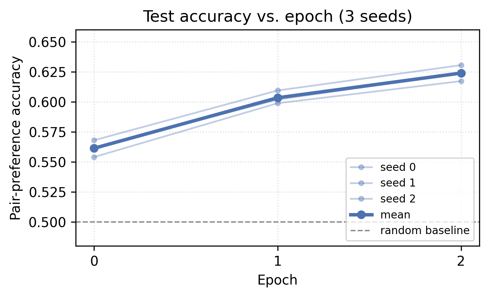
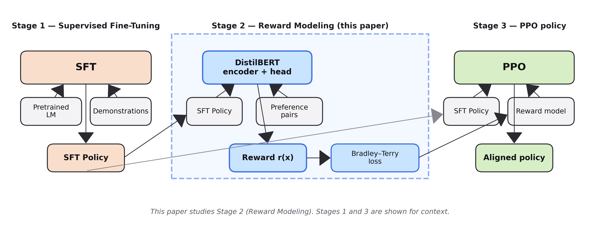

01
Measures the low end of the compute curve
Published reward models almost all live above 1B parameters. We measure what a 66M-parameter distilled encoder recovers on the same preference data.
Reward modeling · RLHF · Compact encoders
Published reward models are almost exclusively billion-parameter backbones. We ask how far down the compute curve a useful preference signal survives, fine-tuning DistilBERT on 2 000 helpful-base pairs from Anthropic/hh-rlhf under a Bradley–Terry objective and measuring pair-preference accuracy on a held-out split.
Reward modeling is the supervised stage that converts a corpus of human preferences over candidate responses into a scalar signal suitable for reinforcement-learning fine-tuning of language models. Published reward-model results are almost exclusively reported with backbones of a billion parameters or more, leaving the lower end of the compute curve — where a small distilled encoder might still offer a useful preference signal — largely uncharacterized. We fine-tune distilbert-base-uncased, a 66M-parameter distilled BERT model, as a pair-preference reward model on a 2 000-pair subset of Anthropic/hh-rlhf helpful-base under a Bradley–Terry objective. Across three seeds, the model attains pair-preference accuracy 0.6239 ± 0.0054 on a 500-pair held-out split, comfortably above the 0.50 random baseline and with relative cross-seed variance below one percent. The result suggests that small distilled encoders can serve as a practical reward-modeling baseline for compute-constrained alignment research and as a cheap preference filter in deployed systems.
Published reward models almost all live above 1B parameters. We measure what a 66M-parameter distilled encoder recovers on the same preference data.
One T4 GPU, ~6 minutes per seed, three seeds. The full training script, metrics, and configuration are released in the repo.
62.39 ± 0.54% pair-preference accuracy — well above the 0.50 random baseline, with cross-seed relative variance below one percent.
Six transformer blocks, hidden size 768, 66.4M parameters. Inputs are prompt+response concatenations, tokenized and truncated to 256 tokens.
A single Linear(768, 1) projection reads the [CLS] hidden state and produces a scalar reward r(x).
For each preference pair we minimize −log σ(rchosen − rrejected). Shared weights across the chosen/rejected pipelines.

[CLS] hidden state to a scalar reward r. The two rewards feed a Bradley–Terry loss.Across three seeds on a held-out 500-pair split of Anthropic/hh-rlhf (helpful-base), the 66M-parameter DistilBERT reward model reaches 62.39 ± 0.54% pair-preference accuracy. Per-seed accuracies are 0.6172, 0.6240, and 0.6305 — relative variance below one percent. Test accuracy rises monotonically across all three epochs for every seed, with no divergence or loss spikes. The monotonic trajectory and tight spread of terminal accuracies suggest the model has not yet plateaued; longer training or more data would likely yield further improvement.

Reward modeling is the middle stage of the standard three-stage RLHF recipe: supervised fine-tuning → reward modeling → RL policy optimization (typically PPO). This paper targets only the second stage; we do not evaluate a downstream policy trained against the reward model.

Full 6-page PDF with method, training, results, and a complete reference list.
02Training script, per-seed metrics, figures, and the full LaTeX source.
03Modal-shaped script. modal run experiment.py runs all three seeds.
BibTeX entry for this paper, below.
@misc{vikash2026distilbertreward,
title = {DistilBERT as a Compute-Efficient Pair-Preference Reward Model},
author = {Vikash},
year = {2026},
url = {https://github.com/Vizuara-AI-Lab/paper-distilbert-reward-model-f20f}
}